Nuit fraîche. Sommeil morcelé. Pourtant calme et apaisé.
Pensées vagabondantes
ça et là
fuyantes
à la dérive lente
d’un repos semi-éveillé
l’esprit présent
le corps absent
puis ta vessie te rappelle qu’il existe,
ce corps
il s’éveille tu émerges il est tôt . mais tu te lèves
une énergie folle s’empare de lui,
ce corps . ton esprit le suit
au ralenti
se laisse embarquer dans ce tempo
alors c’est parti : la journée commence
Tu as senti la chambre s’éveiller au même rythme que toi. Laura n’a rien lâché et profite encore de la quiétude des draps.
Mais tu sens qu’elle est un peu là, avec toi, connectée, présente, consciente.
Thomas et Agathe sont déjà en bas.
Petit-déjeuner faste en nourriture de corps et d’esprit.
J'écris tout ça depuis le chapi. Et là, je me suis levée pour aller prendre cette tasse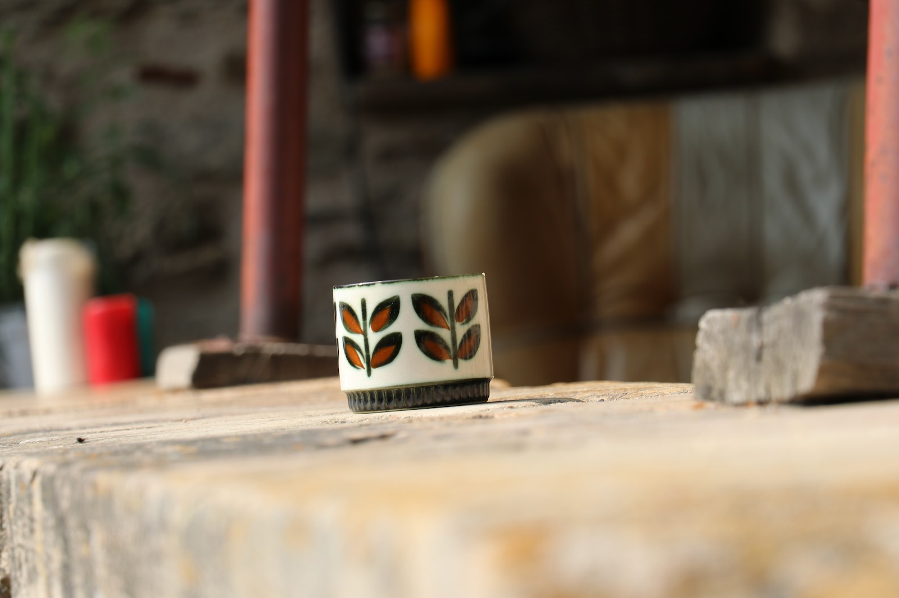 qu’on aime tant en photo. On c’est moi, c’est Margot, c’est Lisa ; je le sais... Elle a attrapé mon regard (la tasse), posée là, esseulée, sur le rebord du muret du perron.
Je reviens là-bas, au petit-déjeuner. J’ai sauté d’occupations triviales matinales en occupations numériques, rétine absorbée par l’écran, en passant par des promenades photographiques.
Les fuseaux d'Agathe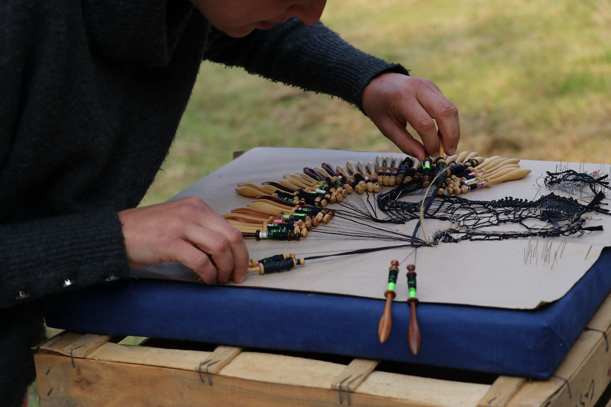 (bis). Le mur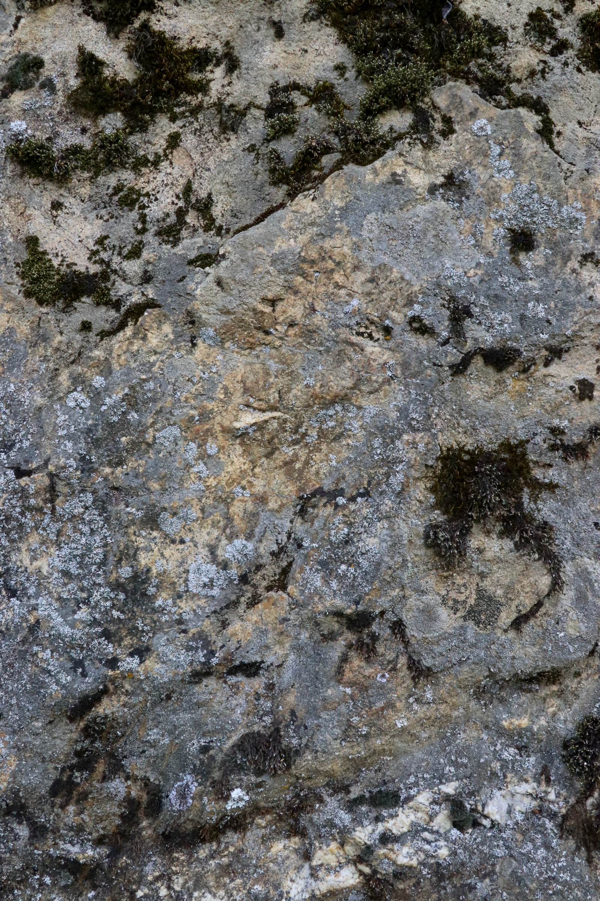 (bis).
Thomas est habité par un personnage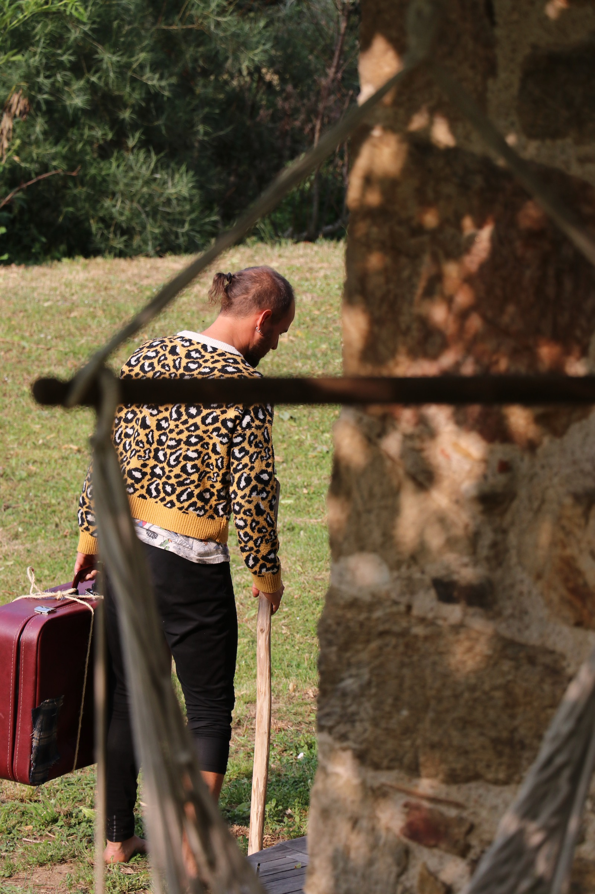. Il parle tout seul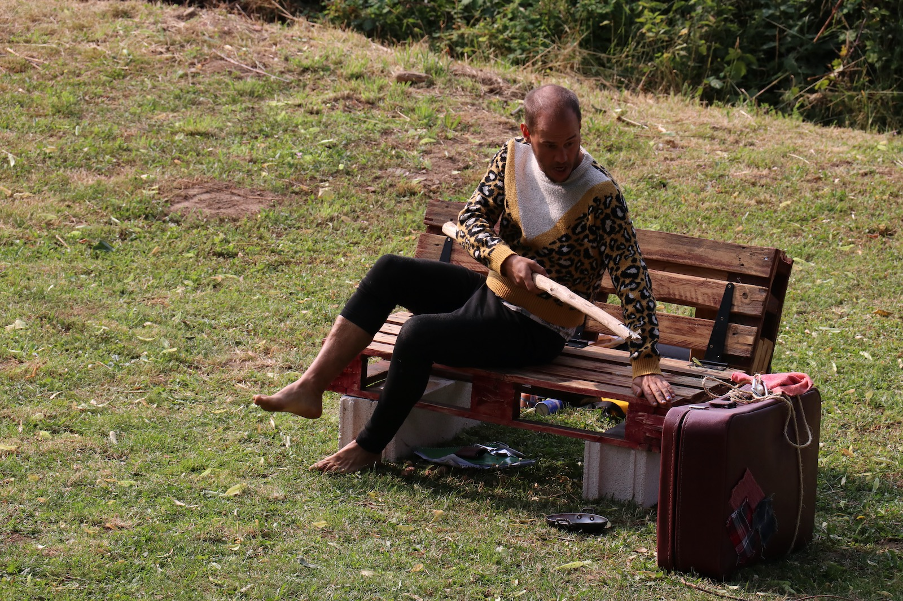. Trimballe sa valise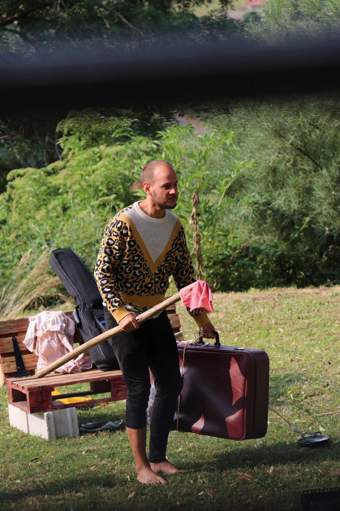. Lave une poêle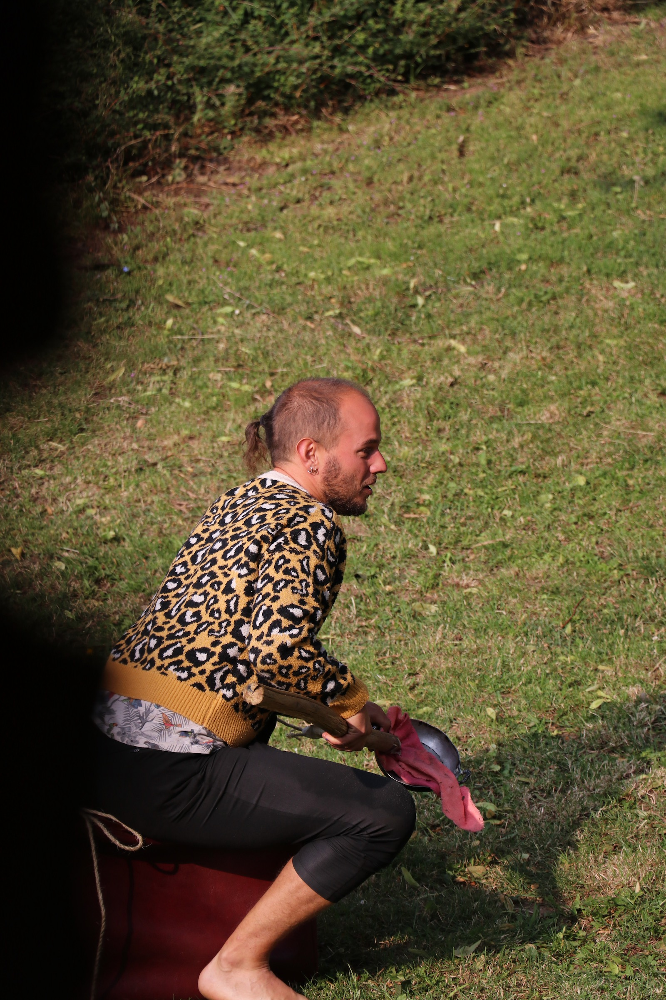.
Palette de bleus et blancs dans l’atelier de Corinne. 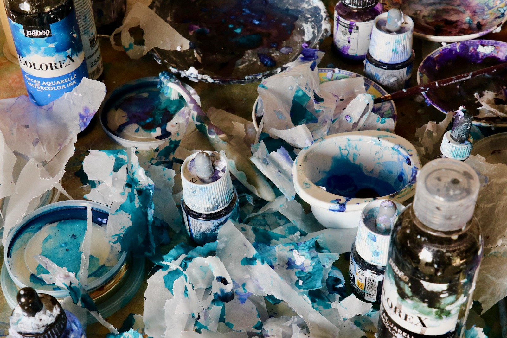 Coquillages. 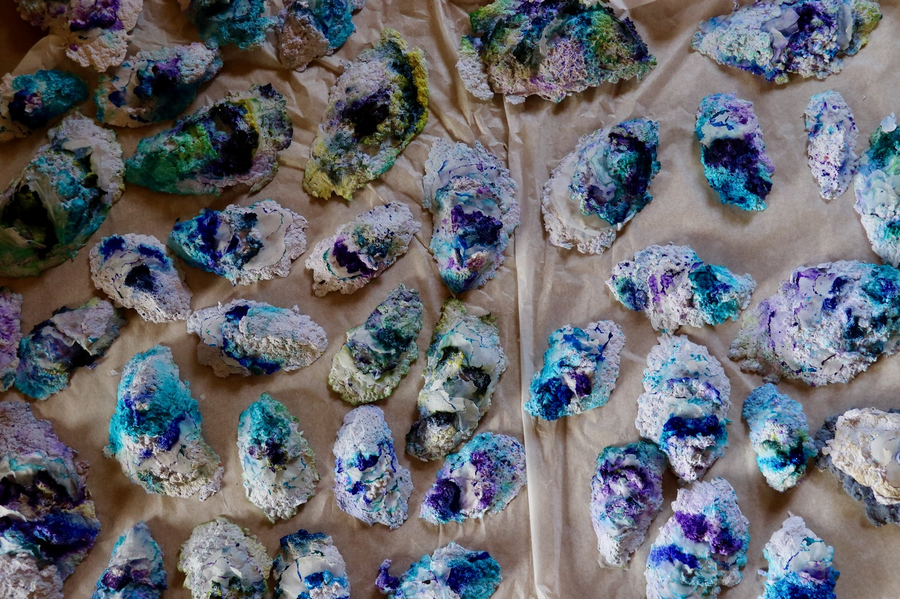
Yoga matinal, une main vole au vent.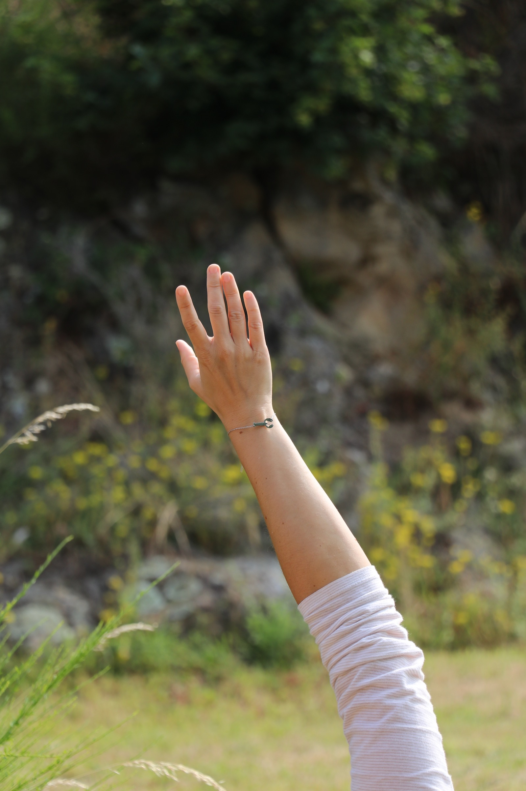
Traces de Paillette sur papier blanc et vert. Marielle s’interroge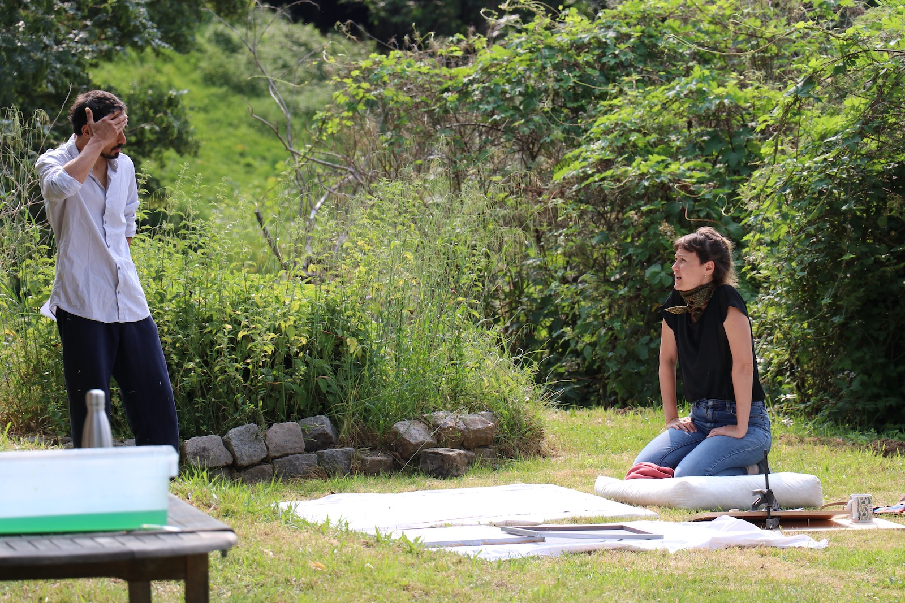. Pierlo est consulté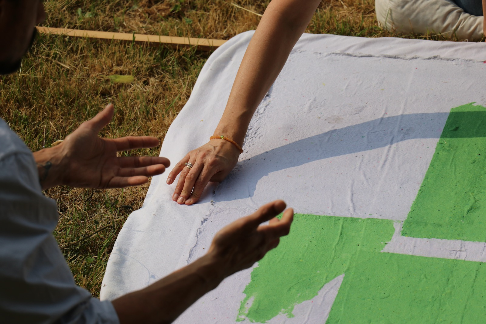. Alors qu’il croque à l’instant, ici, dans une pêche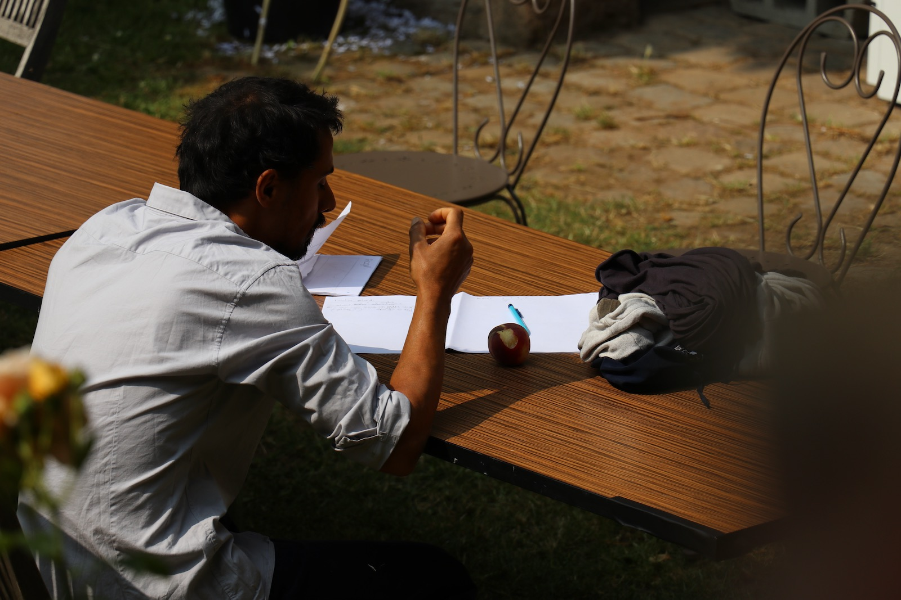.
Dans une escapade numérique, tu te souviens avoir cherché un lien dans tes notes. Tu t’es laissé surprendre par d’anciennes bribes de poésie. De voyage. D’exaltation sentimentale estivale.
Alors aujourd’hui c’est décidé, tu repars en quête des mots du passé !
Ça pourrait commencer par les premiers mots que tu as posés sur tout ce bordel, cette frénésie qu’on t’imposait à moitié. C’est faux. On ne t’imposait rien. On t’ouvrait seulement une porte pour y penser. Une invitation à explorer un terrain encore vierge pour ton esprit. Il te faut beaucoup de contraintes pour te dépasser, allez au-delà de ta très sclérosée liberté de créer.
Plus les jours passent, plus tu te sens arriver rapidement au bout du besoin de raconter l’ici ; et plus tôt tu peux repartir dans l’ancrage intérieur. Le retour à l’idée initiale. Le pas est pourtant toujours difficile à franchir, comme un saut dans le vide. Ou comme un lieu accueillant et confortable que tu désires rejoindre de tout ton être mais qui serait au bout d’un court chemin d’épines. À peines piquantes, pas plus désagréables, sur l’échelle de la douleur, qu’un petit détartrage. Il ne faut pas plus de quelques secondes de ce désagrément pour l’atteindre, ce lieu accueillant. Mais tu luttes, tu refuses d’y aller sans pour autant faire demi-tour car tu sais qu’ici est ta seule destination possible.
J’ai pris une grande inspiration et j’ai commencé par retourner faire un tour dans les notes de mon téléphone. Je crois que je commence par là où j’ai le moins de chance de trouver la matière initiale, le plus de chance de me disperser. Je crois que je me refuse à attaquer le sujet frontalement. Je m’avance sur le chemin d’épines, mais j’avance lentement, à la recherche permanente d’une échappatoire.
Je ne me souvenais déjà plus avoir pianoté dans mon téléphone des premiers mots matinaux, avant que mon corps s’adapte au tempo de mon esprit. Et ça donnait :
Il fallait que ça arrive
À quoi sert de lutter
C’est parfois les meilleures journées
Quand ça commence tôt
Commencer à travailler avant que l’agitation de la maison me donne envie d’être partout en même temps mais surtout pas seule avec mes pensées.
Et je me disperse maintenant dans une note qui parle d'Annie Ernaux.